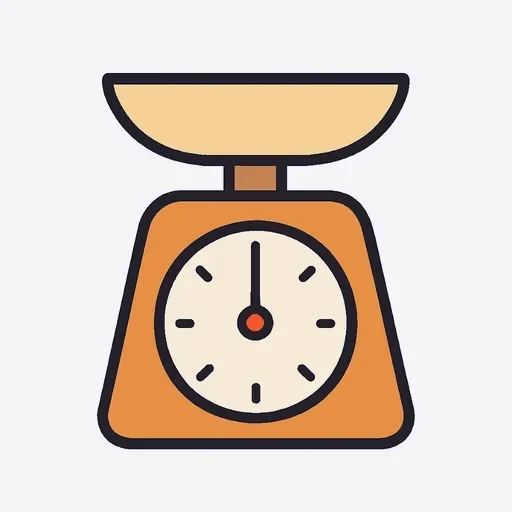
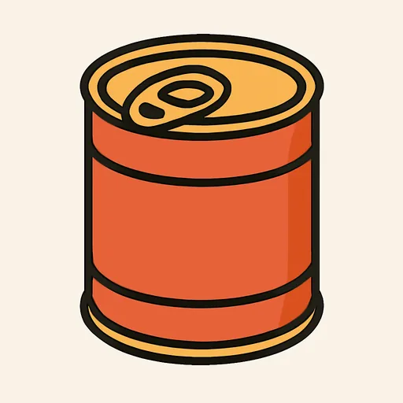
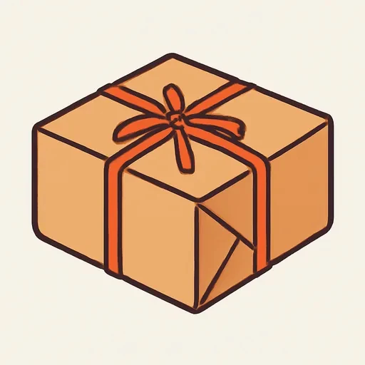
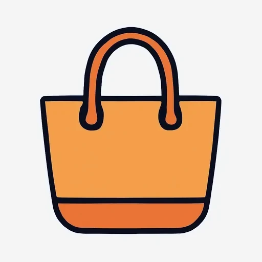
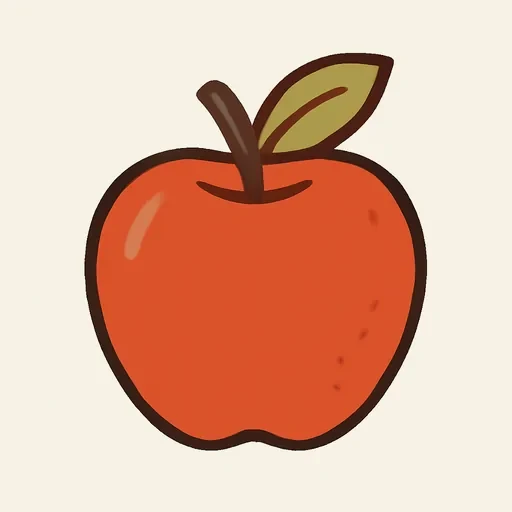

Черновик: урок написан, но преподаватель его ещё не вычитал.
Semana 12 · Día 2 — En el mercado: cantidades y envases
Неделя 12 · День 2 — На рынке: количество и упаковка
Сегодня вы научитесь
- называть любое количество по одной формуле: un kilo DE manzanas;
- пользоваться упаковками: botella, lata, paquete, bolsa, docena, trozo;
- написать список покупок на ужин для четверых — с количествами.
1. Разминка (0–3 мин)
- Карточки: 10 слов (вчерашние: la cuenta, la bebida, de primero, la carta…).
- Вопрос по вчерашнему: ¿Qué quieres de primero y de segundo? Ответьте вслух двумя фразами — и проверьте предлог.
2. Фонетика (3–6 мин)
z и c перед e / i — в числах и в количествах. На рынке вы будете слышать числа весь день, а в половине из них сидит звук этой единицы. Прочитайте вслух, не допуская [ц]:
doce · trece · catorce · quince · cincuenta · docena · el precio · el azúcar · la cereza · el zumo
Три пары, где ошибка слышна особенно ясно, — прочитайте их медленно:
| Español | Не говорите | Говорите |
|---|---|---|
| docena | [доцена] | [doˈθena] (Испания) / [doˈsena] (Америка) |
| cincuenta | [цинкуэнта] | [θiŋˈkwenta] / [siŋˈkwenta] |
| el azúcar | [ацукар] | [aˈθukar] / [aˈsukar] |
Звук вы выбрали в пятницу — [θ] или [s]. Держитесь его и здесь. Запишите все десять слов.
3. Новое (6–16 мин)
Пример
Субботнее утро. Paula и Serguéi на рынке: вечером к ним приходят гости. [AUDIO]
| Español | Русский |
|---|---|
| Vendedora: Buenos días, ¿qué le pongo? | Доброе утро, что Вам дать? |
| Paula: Un kilo de manzanas, por favor. | Килограмм яблок, пожалуйста. |
| Vendedora: ¿Y de tomates? | А помидоров? |
| Paula: Medio kilo. Son para la ensalada. | Полкило. Они для салата. |
| Serguéi: Y una docena de huevos. ¿Cuánto cuesta la docena? | И дюжину яиц. Сколько стоит дюжина? |
| Vendedora: Dos euros cuarenta. ¿Algo más? | Два сорок. Что-нибудь ещё? |
| Serguéi: Un litro de leche y doscientos gramos de jamón. | Литр молока и двести грамм хамона. |
| Vendedora: ¿Doscientos gramos? ¿Así, en un trozo? | Двести грамм? Так, одним куском? |
| Serguéi: No, cortado, por favor. ¿Y cuánto es todo? | Нет, нарезанный, пожалуйста. И сколько всего? |
| Vendedora: Son once euros. ¿Quiere una bolsa? | Одиннадцать евро. Пакет нужен? |
| Paula: No, gracias, tenemos bolsa. | Нет, спасибо, у нас есть. |
| Serguéi: Nos falta el arroz. Un paquete de arroz y una lata de sardinas. | Нам не хватает риса. Пакет риса и банку сардин. |
Прочитайте диалог вслух за трёх человек. Подчеркните каждое de между количеством и продуктом — их семь.
Объяснение
Одна формула на все количества: количество + de + продукт.
un kilo de manzanas · un litro de leche · una docena de huevos · doscientos gramos de jamón · una botella de agua · un trozo de queso
Между количеством и продуктом всегда стоит de, и после de продукт идёт без артикля:
| ✅ Правильно | ✗ Неправильно |
|---|---|
| un kilo de manzanas | ✗ un kilo manzanas |
| un litro de leche | ✗ un litro la leche |
| una lata de sardinas | ✗ una lata de las sardinas |
Вес и объём:
| Español | Русский | Пример |
|---|---|---|
| un kilo (de) | килограмм | un kilo de patatas |
| medio kilo (de) | полкило | medio kilo de tomates |
| cien / doscientos / trescientos gramos (de) | 100 / 200 / 300 грамм | doscientos gramos de queso |
| un litro, medio litro (de) | литр, поллитра | un litro de leche |
Упаковки и порции:
| Español | Русский | Típico con… |
|---|---|---|
| una botella (de) | бутылка | agua, vino, leche |
| una lata (de) | жестяная банка | sardinas, atún, cerveza |
| un paquete (de) | пакет, упаковка | arroz, galletas, azúcar |
| una bolsa (de) | пакет (сумка) | naranjas, patatas, pan |
| una docena (de) | дюжина, 12 штук | huevos |
| un trozo (de) | кусок | queso, jamón, tortilla |
medio — без «un». По-русски «полкило» — одно слово, и артикля там взяться негде. По-испански тоже без артикля, и это надо заметить: ✅ medio kilo, ✅ media docena, ✅ media botella. ✗ un medio kilo. И medio согласуется в роде с тем, что мерим: medio kilo (м.), media docena (ж.).
Граммы всегда во множественном числе: ✅ doscientos gramos, ✗ doscientos gramo. И числительное согласуется: doscientos gramos (м.), но doscientas personas (ж.).
Слова рынка (повторение и новое):
¿Qué le pongo? / ¿Cuánto quiere? ← продавец Un kilo de manzanas, por favor. / ¿Me pone medio kilo? ← вы ¿Algo más? — No, nada más, gracias. ← с пятницы ¿Cuánto es? — Son once euros. ← с пятницы ¿Cuánto cuesta el kilo? ← с 4-й недели
Карта рынка (цены придуманы для этого урока — это учебные цифры, а не настоящие):
MERCADO DE LA PLAZA · precios de ejemplo manzanas 2,00 € el kilo · tomates 1,80 € el kilo · naranjas 1,50 € el kilo patatas 1,20 € el kilo · leche 0,90 € el litro · huevos 2,40 € la docena jamón 24,00 € el kilo · queso 12,00 € el kilo arroz 1,50 € el paquete (un kilo) · sardinas 1,60 € la lata
Посчитайте по ней заказ Paula и Serguéi: килограмм яблок, полкило помидоров, дюжина яиц, литр молока и двести грамм хамона. Продавщица сказала once euros — сходится?
⚠️ Контраст с русским
- В русском количество и продукт склеиваются родительным падежом: «килограмм яблок», «литр молока», «бутылка воды», «двести грамм сыра». Между двумя словами НИЧЕГО не стоит — работу делает окончание.
- В испанском падежей нет, и всю работу родительного делает предлог de — тот самый, который вы знаете с 3-й недели по «el libro de mi hermano». После него продукт стоит без артикля.
- Вы захотите сказать: ✗ un kilo manzanas, ✗ una botella agua, ✗ doscientos gramos queso → Правильно: ✅ un kilo de manzanas, ✅ una botella de agua, ✅ doscientos gramos de queso.
И две ошибки поменьше, которые идут с тем же русским: ✗ un medio kilo (в испанском medio без артикля) и ✗ un kilo de las manzanas (после количества артикля нет: яблоки тут не «те самые», а вещество).
Что помогает: de вы уже умеете. Это тот же предлог, что в la mochila de Pablo, el mapa de España, un zumo de naranja, una tapa de tortilla. Новое сегодня не слово, а привычка не забывать его там, где русский обходится окончанием.
4. Практика (16–26 мин)
Упражнение А. Соедините количество и продукт и напишите фразу целиком.
Модель: kilo + patatas → un kilo de patatas
| Количество | Продукт |
|---|---|
| 1. una docena | а) sardinas |
| 2. un litro | б) huevos |
| 3. una lata | в) queso |
| 4. medio kilo | г) agua sin gas |
| 5. un paquete | д) leche |
| 6. un trozo | е) arroz |
| 7. una botella | ж) tomates |
| 8. media docena | з) naranjas |
| 9. doscientos gramos | и) huevos |
| 10. una bolsa | к) jamón |
Упражнение Б. Дополните диалог на рынке. Банк слов:
¿Qué le pongo? · un kilo de · medio kilo de · una docena de · doscientos gramos de · un litro de · ¿Algo más? · ¿Cuánto es? · Son
— Buenos días. — manzanas y tomates, por favor. — — Sí, huevos y leche. — ¿Nada más? — Ah, y jamón. — once euros.
Упражнение В. Переведите на испанский.
- Килограмм яблок, пожалуйста.
- Полкило помидоров и литр молока.
- Двести грамм сыра, одним куском.
- Бутылка воды без газа и банка сардин.
- — Что-нибудь ещё? — Да, дюжину яиц.
- — Сколько всего? — Одиннадцать евро.
- Мне нравятся яблоки с этого рынка.
- Пакет риса, пожалуйста. Сколько стоит килограмм?
5. Выход (26–29 мин)
Напишите список покупок на ужин для четырёх человек — с количествами. Десять строк, в каждой: количество или упаковка + de + продукт. Сверху одной фразой — что вы готовите (Para la cena: arroz con pollo y ensalada). Берите продукты с карты рынка и из уроков прошлой недели.
Para la cena (cuatro personas): arroz con pollo, ensalada y fruta. 1. un kilo de pollo 2. un paquete de arroz 3. medio kilo de tomates 4. una bolsa de naranjas 5. una docena de huevos …
Потом прочитайте список вслух, как будто диктуете его продавцу. Проверьте перед тем, как закрыть тетрадь: стоит ли de в каждой строке? Нет ли артикля после de? Написано ли medio kilo без un?
6. Итог (29–30 мин)
- [ ] Я говорю un kilo de manzanas и не теряю de.
- [ ] Я знаю шесть упаковок: botella, lata, paquete, bolsa, docena, trozo.
- [ ] Я помню: medio kilo без un, и gramos всегда с -s.
- Добавьте слова дня в колоду. Завтра — вежливые просьбы с poder и обещанная таблица muy / mucho.
Словарь дня
| Español | Русский | Пример |
|---|---|---|
| el kilo · medio kilo | кило · полкило | Medio kilo de tomates. |
 los gramos |
граммы | Doscientos gramos de jamón. |
| el litro · medio litro | литр · поллитра | Un litro de leche. |
| la docena · media docena | дюжина (12 штук) · полдюжины | Una docena de huevos. |
 la lata |
жестяная банка | Una lata de sardinas. |
 el paquete |
пакет, упаковка | Un paquete de arroz. |
 la bolsa |
пакет, сумка | Una bolsa de naranjas. |
| el trozo | кусок | Un trozo de queso. |
 la manzana |
яблоко | Un kilo de manzanas. |
| ¿Cuánto quiere? | Сколько Вам? | — ¿Cuánto quiere? — Medio kilo. |
Ответы
А. 1 — б или и: una docena de huevos · 2 — д: un litro de leche · 3 — а: una lata de sardinas · 4 — ж: medio kilo de tomates · 5 — е: un paquete de arroz · 6 — в: un trozo de queso · 7 — г: una botella de agua sin gas · 8 — и или б: media docena de huevos · 9 — к: doscientos gramos de jamón · 10 — з: una bolsa de naranjas. — «Huevos» стоит в списке дважды (б и и), потому что дюжина и полдюжины меряют одно и то же; всё остальное соединяется однозначно.
Б. — Buenos días. ¿Qué le pongo? / — Un kilo de manzanas y medio kilo de tomates, por favor. / — ¿Algo más? / — Sí, una docena de huevos y un litro de leche. / — ¿Nada más? / — Ah, y doscientos gramos de jamón. ¿Cuánto es? / — Son once euros.
В. 1. Un kilo de manzanas, por favor. · 2. Medio kilo de tomates y un litro de leche. · 3. Doscientos gramos de queso, en un trozo. · 4. Una botella de agua sin gas y una lata de sardinas. · 5. — ¿Algo más? — Sí, una docena de huevos. · 6. — ¿Cuánto es? — Son once euros. · 7. Me gustan las manzanas de este mercado. · 8. Un paquete de arroz, por favor. ¿Cuánto cuesta el kilo?
— Где русский подталкивает к ошибке: в 1–5 русский родительный падеж не требует никакого слова между количеством и продуктом, и рука пишет ✗ un kilo manzanas; в 2 «полкило» — medio kilo, без un; в 3 «двести грамм» — gramos, с -s; в 6 цена во множественном числе — son, а не es (правило пятницы); в 7 яблоки «вообще» требуют артикль (las manzanas) и глагол в множественном числе (gustan) — две темы прошлой недели в одной фразе.